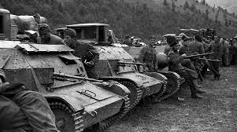

LA GUERRA DE LOS BALCANES

Las guerras de los Balcanes fueron dos guerras ocurridas en el sureste de Europa de 1912 a 1913. La primera enfrentó al Imperio otomano con la llamada Liga de los Balcanes formada por Bulgaria, Montenegro, Grecia y Serbia. Las pequeñas naciones balcánicas lograron expulsar a los otomanos de casi todo el territorio de la península, pero no pudieron evitar enfrentarse entre sí por el reparto de las tierras que les habían arrebatado, lo que originó la segunda guerra de los Balcanes.1 El Tratado de Bucarest puso fin a las guerras, pero dejó la zona en un equilibrio inestable, debido al deseo de los derrotados búlgaros de tomarse la revancha en cuanto surgiese la oportunidad.2 Las contiendas tampoco saciaron los apetitos de los nacionalistas griegos y serbios, que seguían deseosos de ampliar sus Estados a costa de otomanos y austrohúngaros, respectivamente.
CAUSAS
en el año 1878, los otomanos perdieron el control en Tesalia, Bosnia y Herzegovina, Novi Pazar, noroeste y noreste de Montenegro, Rumelia y Dobruya.Tras la derrota diplomática rusa en la crisis bosnia de 1908, esta trató de recuperar su influencia en los Balcanes induciendo a los países de la península a asociarse8 bajo su supervisión.En 1911, llegó también a un acuerdo con Italia para cooperar con ella en la región. El mismo año, la derrota del Imperio otomano ante la misma Italia en la guerra ítalo-turca que le permitió a esta anexionarse Libia y la continua inestabilidad en el Imperio hicieron que los Estados balcánicos viesen como inminente la partición de Macedonia. La debilidad otomana permitió a los Estados balcánicos arrumbar temporalmente sus diferencias y coligarse para atacar al imperio.
A pesar de su rivalidad por controlar Macedonia8 y erigirse como la potencia principal de los Balcanes, Bulgaria y Serbia lograron alcanzar un acuerdo el 13 de marzo de 1912 de defensa mutua y contrario a la repartición de territorio otomano por otros Estados.Los anexos secretos del acuerdo trataban sobre la división de Macedonia entre los dos países, dejando la futura frontera entre ambos extremadamente vaga:Serbia se anexionaría los territorios al norte de los montes Šar, Bulgaria aquellos al este del Struma y de las montañas Ródope. El resto de Macedonia quedaba sin asignar, aunque Serbia se comprometía a no exigir los territorios más allá de la línea Kriva Palanka-Veles-Ohrid, sin ocupar ninguna de las dos últimas poblaciones.El resto podría dividirse entre Bulgaria y Grecia.Ambos países se comprometían a enviar cien mil soldados al frente de Macedonia, suministrando Serbia un total de ciento cincuenta mil y Bulgaria doscientos mil soldados.13
Más tarde Bulgaria llegó a un acuerdo más limitado con Grecia. Esta se negó a aceptar una Macedonia autónoma y reclamó, como Bulgaria, el puerto de Salónica.Así, el acuerdo con Grecia fue puramente defensivo, dadas las grandes diferencias entre las dos naciones.
A continuación Serbia y Bulgaria comenzaron las negociaciones con Montenegro, que debía provocar al Imperio otomano para lograr el estallido de las hostilidades.Rusia, consciente de que su alianza para frenar el poderío del Imperio austrohúngaro se había convertido en un pacto para atacar al Imperio otomano, trató de frenarla mediante diplomacia, para lo que contó con el acuerdo de Austria-Hungría.El 8 de octubre de 1912, estas dos potencias advirtieron a los países balcánicos que los posibles cambios territoriales en la península no serían reconocidos por las grandes potencias, pero ese mismo día Montenegro desencadenó un ataque contra los otomanos, apoyado inmediatamente por el resto de sus aliados.
.VOLVER A LA PAGINA PRINCIPAL